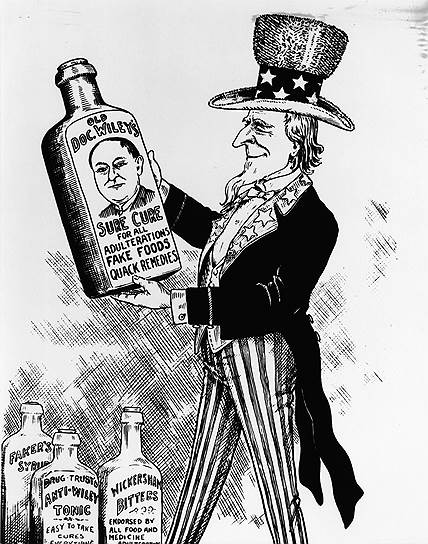

Samuel Hopkins dedicated his life to to exposing public health and medicine patient fraud, and false advertisement. His ’s book the “The Great American Fraud” s helped pass the 1906 Pure Food and Drug Act. He worked with Ida Tarbell and Upton Sinclair and McClure’s magazine. While Hopkins revolutionized our nations understanding of public health, today we still suffer from charlatans and “naturalists” taking advantage of people’s fears of “toxins” to get rich from alternative medicine.In his novel Clarion, he accused news papers of being complicit in the selling of fake medicine and drugs, a trend that has continued today.with bogus health scares and native advertsiesments.
“Into this wild-beast tangle these men had been born without their consent, they had taken part in it because they could not help it; that they were in jail was no disgrace to them, for the game had never been fair, the dice were loaded. They were swindlers and thieves of pennies and dimes, and they had been trapped and put out of the way by the swindlers and thieves of millions of dollars.” -Samuel Hopkins Adams, The Great American Fraud
“With a few honorable exceptions the press of the United States is at the beck and call of the patent medicines. Not only do the newspapers modify news possibly affecting these interests, but they sometimes become their agents.” ― -Samuel Hopkins Adams, The Great American Fraud
“Gullible America will spend this year some seventy-five millions of dollars in the purchase of patent medicines. In consideration of this sum it will swallow huge quantities of alcohol, an appalling amount of opiates and narcotics, a wide assortment of varied drugs ranging from powerful and dangerous heart depressants to insidious liver stimulants; and far in excess of all other ingredients, undiluted fraud. For fraud, exploited by the skilfulest of advertising bunco men, is the basis of the trade. Should the newspapers, the magazines, and the medical journals refuse their pages to this class of advertisements, the patent medicine business in five years would be as scandalously historic as the South Sea Bubble, and the nation would be the richer no only in lives and money, but in drunkards and drug-fiends saved. . ..” -Samuel Hopkins Adams, The Great American Fraud
Photos
Sources
Source